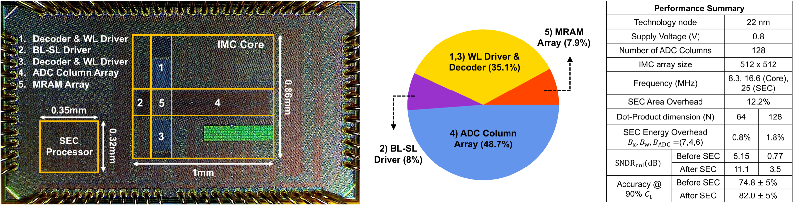

ESSCIRC silicon · JxCDC parallel-bar model · JSSC synthesis
Making MRAM compute measurably more reliable.
This project traces one 22 nm MRAM in-memory-computing macro from a parasitic-aware behavioral model to statistical error compensation, mixed-signal circuit design, tapeout, PCB and PYNQ bring-up, and measured silicon.

The complete research arc
One idea, carried through five engineering layers.
The project begins with a physical observation—row position changes analog contribution—and follows it all the way to a measured result. Each layer turns the output of the previous layer into a concrete design decision.
Row position changes the signal
MTJ variation, BL/SL parasitics, read noise, and ADC conversion reveal where ideal arithmetic diverges from analog behavior.
Describe that change with
captures the contribution of row as observed by column , making the spatial error structure explicit.
Learn and
pre-scales each row and normalizes each output column so that statistically.
Quantize and integrate
Precision studies select the fixed-point SEC path; OCCS, the MRAM array, ADCs, and local control form one macro.
Estimate compute SNDR
Python, PYNQ-Z2, a custom PCB, and code-conditioned sampling turn raw ADC captures into calibrated evidence.
Research thesisSEC works because the dominant array error has spatial structure that can be learned with one correction per row and one normalization per column.
Why the problem is hard
A useful signal can be a fraction of one percent.
For a 128-row dot product, the paper’s representative conductance step is against a nominal column conductance . Bitline and sourceline voltage gradients, current-sensor noise, column mismatch, and supply drop compete directly with that small step.
Parallelism compresses the analog margin.
A larger dot product activates more rows and accumulates more current, while the step between adjacent ideal outputs remains small. Compute SNDR becomes the link between array scaling and useful arithmetic.
The experiment selects an activation and weight state with a known ideal code.
A learned 7-bit factor adjusts the digital input before array evaluation.
MRAM state, BL/SL parasitics, and row location determine the column current.
Offset-compensated sensing feeds a 6-bit SAR conversion for each ADC column.
Per-column affine calibration and code-conditioned error turn raw codes into the reported metric.
Signal pathThe same chain explains both the architecture and the experiment: acts before the physical array, OCCS preserves the small analog step, and column calibration makes measured codes comparable to the ideal output.
Prototype at a glance
Four layers describe the same dot product.
A physical 1T1R array stores MRAM states, differential 2T2R pairs encode signed weights, OCCS and the SAR ADC convert column current, and SEC scales rows and columns to improve bank-level compute SNDR.
Physical memory
Commercial 22 nm FD-SOI, physical 1T1R MRAM cells, operated at .
Signed weight
A differential 2T2R logical representation forms signed 4-bit weights across binary-weighted physical columns.
Column conversion
128 ADC columns combine offset-compensated current sensing, a 6-bit SAR ADC, and local control.
SEC correction
Learned row scaling and per-column normalization improve task-agnostic bank-level compute SNDR.

Engineering record
From mathematical intent to a repeatable measurement.
This repository documents the decision gates that papers usually compress: what was modeled, what was frozen for implementation, what was checked at tapeout, what the board had to make observable, and how the measurement state space was sampled.
Behavior → architecture
Trace , , and from the behavioral model into OCCS, fixed-point precision, and dataflow.
Open design principles →Netlist → packaged die
Follow the mixed-signal design gates from bit-accurate correlation through physical verification, handoff, packaging, and post-silicon readiness.
Open tapeout workflow →Host → calibrated result
Follow the PYNQ, PCB, scan-chain, calibration, sampling, and analysis sequence used to interrogate silicon.
Open test platform →The role of SEC
The array learns its own correction.
Statistical error compensation calibrates the physical compute bank. The application weights stay fixed while SEC learns row factors and column normalizers from the measured hardware response.
This raises task-agnostic bank-level compute SNDR. The CIFAR-10 experiment then uses the measured final fully connected layer of ResNet-20 to show how that signal-quality change affects classification.
From SNR to SNDR
The ESSCIRC paper introduces the result as an SNR boost. The JSSC extension separates temporal noise and state-dependent distortion through the broader compute-SNDR methodology used throughout this site.